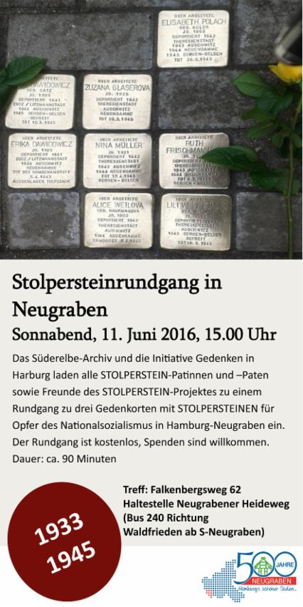
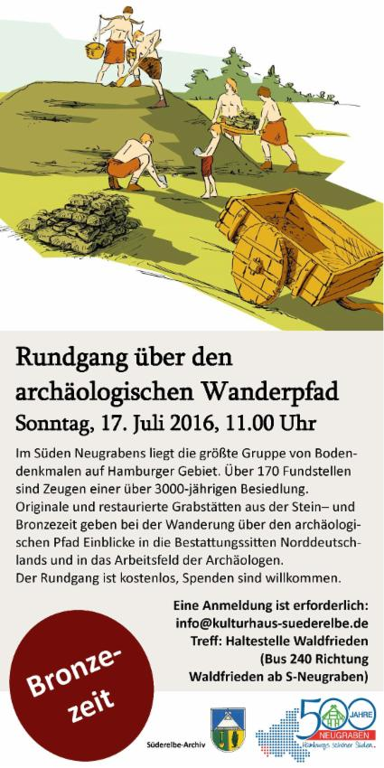

Auch 2017 bieten wir wieder historische Rundgänge in Neugraben und Süderelbe an. Bitte sehen Sie auf unserer Internet-Präsenz www.suederelbe-archiv.de nach!


Anmeldung ab 1. Juli 2016 bitte unter info@suederelbe-archiv.de! Vielen Dank.
Bitte beachten Sie: Es stehen aktuell keine Plätze mehr zur Verfügung (So, 10.07.2016) - der Rundgang ist ausgebucht.